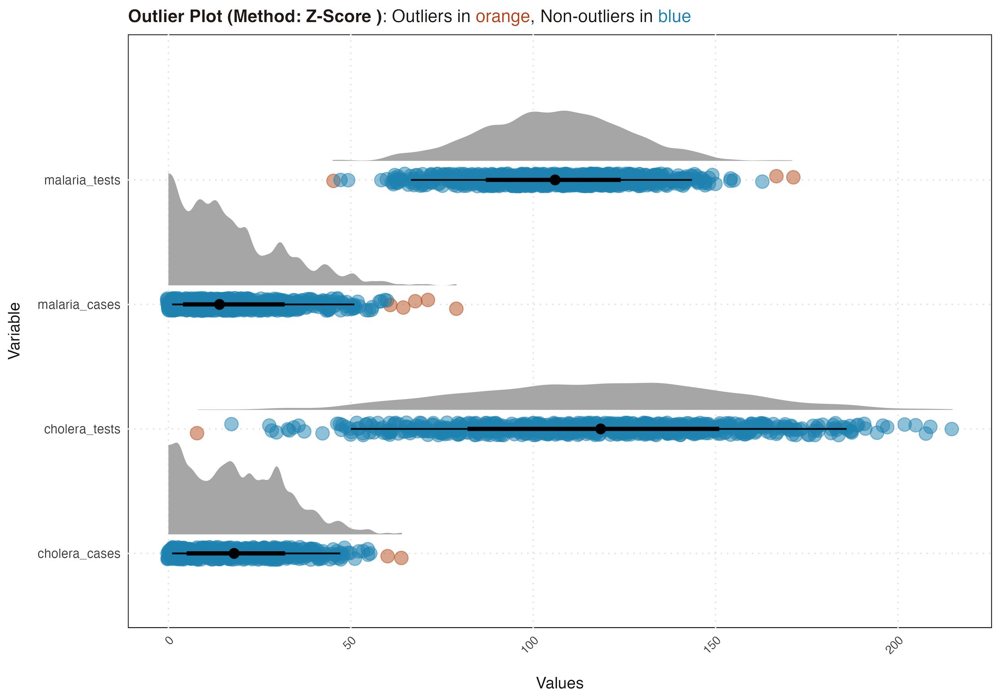
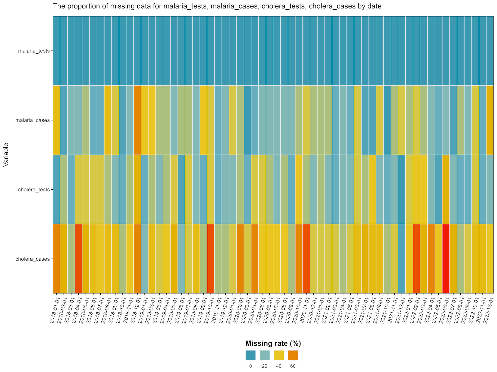

Description
This package offers a tidy solution for epidemiological data. It houses a range of functions for epidemiologists and public health data wizards for data management and cleaning. These include:
-
import()imports files of any formats. -
export()exports files of any formats. -
get_admin_names()downloads admin names using various country codes and naming conventions. -
clean_admin_names()cleans admin names using both user-provided and downloaded admin data. -
create_test()creates a unit-testing functions to perform various data validation. -
consistency_check()plot to see if certain variables exceed others (i.e., tests vs cases). -
handle_outliers()detects outliers using various approaches, and offers functionality to manage them. -
missing_plot()plots missing data or reporting rate for given variable(s) by different factors.
Installation
The package is yet to be available on Cran, but can be installed using devtools in R.
# The way to install it via CRAN once available
# install.packages("epiCleanr")You can install the latest development version from GitHub by using:
# If you haven't installed the 'devtools' package, run:
# install.packages("devtools")
devtools::install_github("truenomad/epiCleanr")Usage
Import and export
Inspired by rio, the import function allows you to read
data from a wide range of file formats. Additional reading options
specific to each format can be passed through the ellipsis (…) argument.
Similarly, the export function provides a simple way to export data into
various formats.
# Load the epiCleanr package
library(epiCleanr)
# Reading a CSV file with a specific seperator
data_csv <- import("path/to/your/file.csv", sep = "\n")
# Import the first sheet from an Excel file
data_excel <- import("path/to/your/file.xlsx", sheet = 1)
# Export a Stata DTA file
export(my_data, "path/to/your/file.dta")
# Export an RDS file
export(my_data, "path/to/your/file.rds")
# Export an Excel file with sheets
export(
list(my_data = my_data1, my_data2 = my_data2), "path/to/your/file.xlsx")Clean strings
The clean_names_strings() function offers additional
flexibility by allowing you to clean not just strings within columns but
also the column names themselves.
# For data frame with snake_case (default)
data("iris")
colnames(iris)
# > "Sepal.Length" "Sepal.Width" "Petal.Length" "Petal.Width" "Species"
cleaned_iris <- clean_names_strings(iris)
colnames(cleaned_iris)
# > "sepal_length" "sepal_width" "petal_length" "petal_width" "species"Download administrative names
You can download administrative names (such as districts, provinces,
etc.,) for a given country via the GeoNames website using
country name or codes to pull the data.
# Get admin names for Togo
admin_names <- get_admin_names(country_name_or_code = "Togo")
# Different admin levels are saved as a list
str(admin_names$adm2)
#>'data.frame': 30 obs. of 7 variables:
#> $ country_code : chr "TG" "TG" "TG" "TG" ...
#> $ asciiname : chr "Vo Prefecture" "Zio Prefecture" "Tchaoudjo" "Tchamba" ...
#> $ alternatenames: chr "Circonscription de Vogan, Prefecture de Vo, Préfecture de Vo, ...
#> $ adm2 : chr "Vo Prefecture" "Zio Prefecture" "Tchaoudjo" "Tchamba" ...
#> $ latitude : num 6.42 6.58 9 8.83 6.67 ...
#> $ longitude : num 1.5 1.17 1.17 1.42 1.5 ...
#> $ last_updated : IDate, format: "2019-01-08" "2019-01-08" "2022-02-17" "2022-02-17" ...Clean administrative names
You can clean administrative names using them
clean_admin_names function, which uses various matching and
string distance algorithms to match your admin data, using your own list
of admin names as well admin names from GeoNames
website.
# Get simulated epi data for Togo
data(fake_epi_df_togo)
# Referecne dataset with clean admin names
data(togo_admin_df)
# Lets check how the matching looks
clean_admin_names(
country_code = "Togo",
admin_names_to_clean = fake_epi_df_togo$district,
user_base_admin_names = togo_admin_df$district,
report_mode = T)
#> There are 15 out of 15 (100%) admins that have been perfectly matched!
#> # A tibble: 15 × 5
#> names_to_clean final_names ource_of_cleaned_name prop_matched matching_algorithm
#> <chr> <chr> <chr> <dbl> <chr>
#> 1 Bas-Mono Bas-Mono User base admin names 100 Levenshtein Distance
#> 2 Bliita Blitta Main admin name from geonames 100 Soundex
#> 3 Centrale Centrale User base admin names 100 Levenshtein Distance
#> 4 Cinkaasi Cinkassé User base admin names 100 Soundex
#> 5 Dankben Dankpen Main admin name from geonames 100 Soundex
#> 6 East-Mono Est-Mono Main admin name from geonames 100 Soundex
#> 7 Kaloto Kloto Main admin name from geonames 100 Soundex
#> 8 Keéran Keran Alternative name from geonames 100 Soundex
#> 9 Lomé Lomé User base admin names 100 Levenshtein Distance
#> 10 Ogou Ogou Main admin name from geonames 100 Levenshtein Distance
#> 11 Sotouboua Sotouboua Main admin name from geonames 100 Levenshtein Distance
#> 12 Tchamaba Tchamba Main admin name from geonames 100 Soundex
#> 13 Vo Vo Prefecture Main admin name from geonames 100 Levenshtein Distance
#> 14 Yotto Yoto Main admin name from geonames 100 Soundex
#> 15 Zioo Zio Prefecture Main admin name from geonames 100 Soundex
# If we are happy with the names, we can update the old names with the new ones
# otherwise we can further clean the names manually
fake_epi_df_togo$district <-
clean_admin_names(
country_code = "Togo",
admin_names_to_clean = fake_epi_df_togo$district,
user_base_admin_names = togo_admin_df$district,
report_mode = F) Create unit testing functions
The create_test is there so users can create their own
functions in which they can use for unit-testing when working with
datasets that require lots of manipulation and wrangling. This function
(plus the tidylog package) will save users from the
headache of troubleshooting issues related to data joins and
transformations.
# Set up a unit-testing fucntion
my_tests <- create_test(
# For checking the dimension of the data
dimension_test = c(900, 9),
# For expected number of combinations in data
combinations_test = list(
variables = c("month", "year", "district"),
expectation = 12 * 5 * 15),
# Check repeated cols, rows and max and min thresholds
row_duplicates = TRUE, col_duplicates = TRUE,
max_threshold_test = list(malaria_tests = 1000, cholera_tests = 1000),
min_threshold_test = list(cholera_cases = 0, cholera_cases = 0)
)
# Apply your unit-test on your data
my_tests(fake_epi_df_togo)
#> Test passed! You have the correct number of dimensions!
#> Test passed! No duplicate rows found!
#> Test passed! No repeated columns found!
#> Test passed! You have the correct number of combinations for month, year, district!
#> Test passed! Values in column cholera_cases are above the threshold.
#> Test passed! Values in column cholera_cases are above the threshold.
#> Test passed! Values in column malaria_tests are below the threshold.
#> Test passed! Values in column cholera_tests are below the threshold.
#> Congratulations! All tests passed: 8/8 (100%) üòÄConsistency check
The consistency_check function serves as a function for
validating the logical relationships between variables. For instance, if
you know that the number of disease cases cannot exceed the number of
tests for that disease, this function helps inspect such expected
behaviours in your data.
# Run checks using Togo data
consistency_check(fake_epi_df_togo,
tests = c("malaria_tests", "cholera_tests"),
cases = c("malaria_cases", "cholera_cases"))
#> Consistency test passed for malaria_tests vs malaria_cases: There are more tests than there are cases!
#> Consistency test failed for cholera_tests vs cholera_cases: There are 3 (0.33%) rows where cases are greater than tests.
# You can even save the plot if you want
ggplot2::ggsave("../man/figures/consistency_plot.png", width = 10,
height = 5.75, scale = 0.95, dpi = 400, bg = "white")
Detecting and handling outliers
The handle_outliers function is designed for both
identifying and addressing outliers in your dataset. It supports
multiple statistical methods for outlier detection, such as Z-score,
modified Z-score, and Interquartile Range. Beyond detection, the
function offers various options for handling outliers, including removal
or replacement with mean, median, grouped means, or quantiles.
# Select the variables
variables <- c("malaria_tests", "malaria_cases",
"cholera_tests", "cholera_cases")
# Get outliers report
outliers <- handle_outliers(
fake_epi_df_togo, vars = variables,
method = "zscore", report_mode = TRUE)
# Get the report
outliers$report
#> variable test outliers prop_outliers
#> <chr> <chr> <glue> <chr>
#> 1 malaria_tests Z-Score 5/900 <1%
#> 2 malaria_cases Z-Score 5/900 <1%
#> 3 cholera_tests Z-Score 2/900 <1%
#> 4 cholera_cases Z-Score 1/900 <1%
# Get the plot
outliers$plot
# You can even save the plot if you want
# ggplot2::ggsave("../man/figures/outliers_plot.png", width = 10,
# height = 7, scale = 0.95, dpi = 400)
# If happy, create a dataframe with the outliers handled
fake_epi_df_togo_no_outliers <- handle_outliers(
fake_epi_df_togo, vars = variables,
method = "zscore", report_mode = FALSE,
treat_method = "mean")
Checking missing data and reporting rates over factors
The missing_plot function allows you to visualize
missing data across different variables, either by a single factor like
time or district, or by two factors simultaneously like date and
district. This is particularly useful when you’re dealing with
epidemiological data that might have varying degrees of completeness
across different times or locations.
# Make date columns
fake_epi_df_togo2 <- fake_epi_df_togo |>
dplyr::mutate(date = lubridate::as_date(paste0(year, month, "/01")))
# Missing rate for variables across dates
missing_plot(fake_epi_df_togo2, miss_vars = variables,
x_var = "date", use_rep_rate = F)
# Reporting rate for malaria_cases across dates and districts
missing_plot(fake_epi_df_togo2, miss_vars = "malaria_cases",
x_var = "date", y_var = "district", use_rep_rate = T)